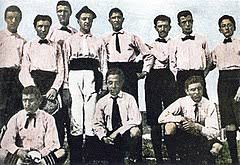
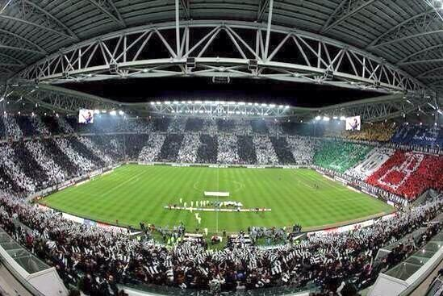
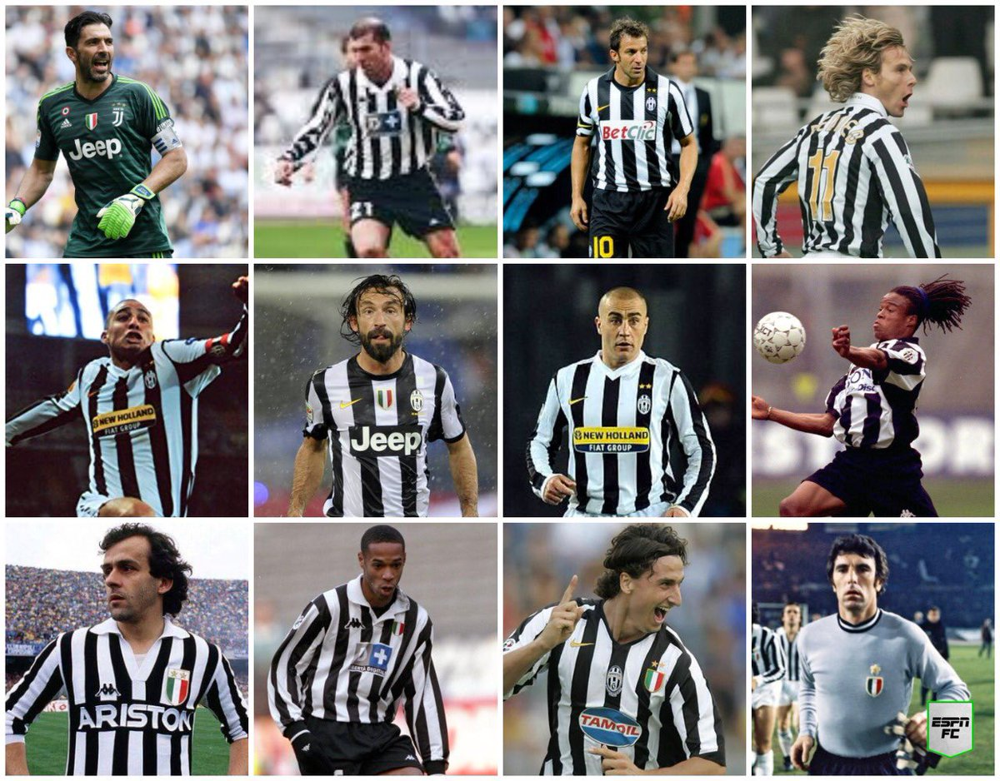

Storia in bianco e nero
El Club fue fundado el 1 de Noviembre de 1897 por un grupo de estudiantes con el nombre de Sport Club Juventus. Se vinculó a la familia Agnelli desde 1923 y desde su fundación ha sido el club Italiano más exitoso de su país y uno de los equipos más poderosos y represantivos del mundo
Zebra J
A partir de la década de 1980, coincidiendo con la apertura del fútbol italiano a prácticas tales como la mercadotecnia y, en particular, al merchandising, la Juventus incluyó dentro de sus símbolos corporativos tradicionales una mascota, especialmente dirigida a los aficionados juventinos de corta edad. Alrededor de 1985 debutó la primera mascota del club, el perro Giampi:un bobtail con un mechón de pelo blanquinegro, uniforme juventino y bandera tricolor. En la temporada 1995-96 llegó Alex una versión caricaturizada de Alessandro Del Piero, este fue seguido en 1999 por la cebra Zig Zag. Desde el año 2015, la mascota oficial es J, una cebra con rasgos antropomórficos.

Il nostro stadio
El 18 de marzo de 2008, la junta directiva del club aprobó la construcción de un nuevo estadio en la misma ubicación donde estaba situado el Stadio delle Alpi. La inversión total tuvo un coste aproximado de 120 000 000 €.
La obra, diseñada bajo la coordinación de los arquitectos Gino Zavanella, Eloy Suárez y el ingeniero Massimo Majowecki fue lanzado oficialmente el 20 de noviembre de 2008 en Lingotto, prevista con una superficie total de 355 000 m² (de los cuales 45 000 fueron utilizados para el estadio, 155 000 para el área de servicios, 34 000 para actividades comerciales y 30 000 para zonas verdes)
Todo el edificio es de planta rectangular, está rodeado por dos estructuras semielípticas que albergan restaurantes y bares. El acceso a las tribunas se realiza a través de los puentes específicos incluidos en los distintos sectores del estadio. Cuenta también con palcos Vip —diseñados por Pininfarina— con vistas al jardín.

giocatori leggendari
Sin duda en la Juventus han jugados muchos de los mejores jugadores del mundo y de la selección de Italia, nombres como Zidane, Davis, Cannavaro, Dybala, Tevez, Henry, Pirlo, Chiellini, Paolo Montero, Trezeguet son comunes dentro de las plantillas habituales en cada temporada.
Pero sin duda los nombres que más han hecho historia son el de Alexandro del Piero, Platini, Cristiano Ronaldo, Pavel Nedved y G. Buffon ocupan el Olimpo dentro de los mejores jugadores en su historia